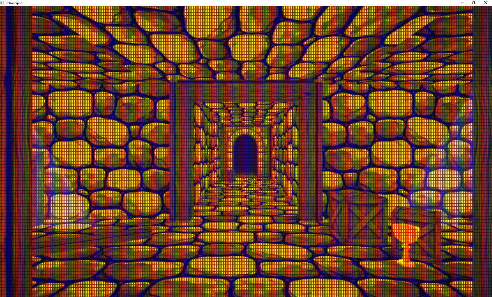
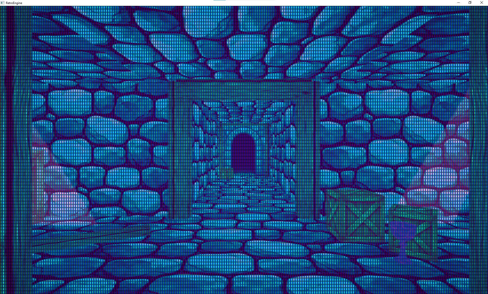
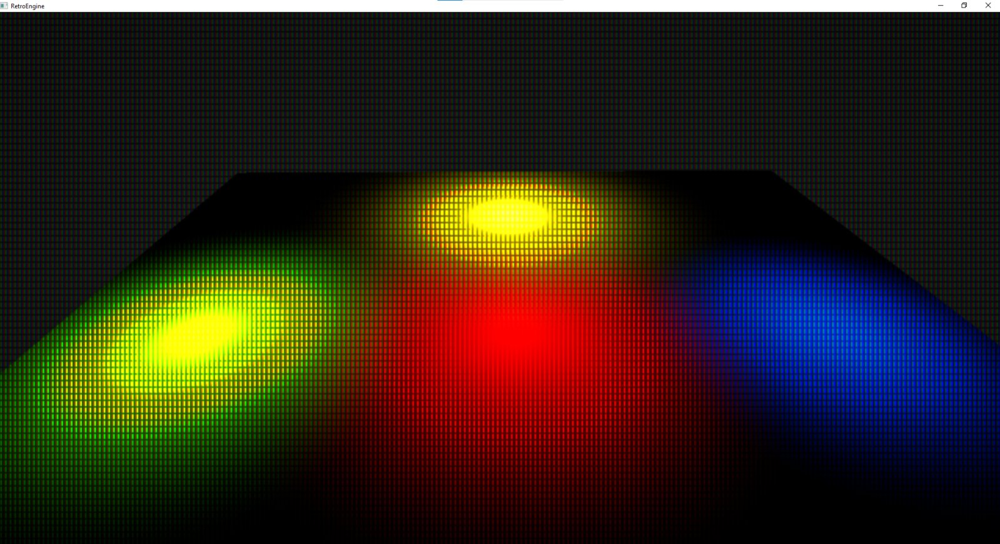
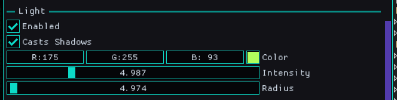
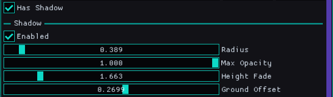
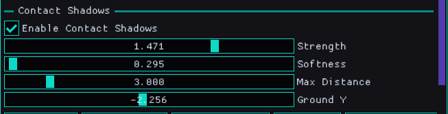
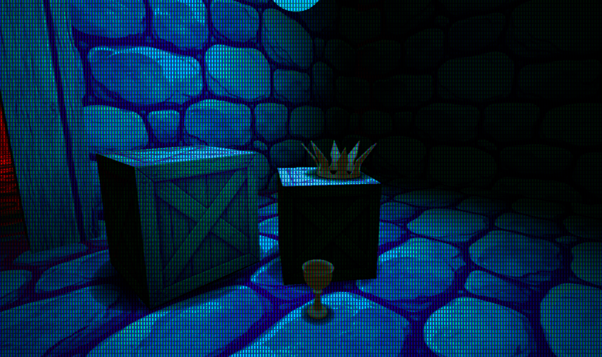
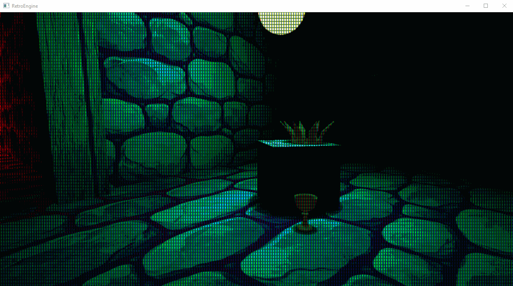

The Point of Lighting
This dev log covers some updates to lighting in Retro Game Engine. At the start of this dev log, I currently have just directional lighting and an ambient/fill lighting and they work well together, but they are certainly lacking.
Everything read, but it was flat. Objects felt floaty. Scenes didn’t have local focus. Nothing in the world was helping me build emotion or art direction. And I really needed to prove to myself that something with story could be contained in this thing I was building.
I didn’t want a giant lighting system. I wanted the minimum set of tools that makes a scene feel alive and grounded without turning Retro Game Engine into a general-purpose engine. Something that would let me add life to the world, without tanking performance at the same time.
Here are a couple examples of where things were when I started this. Directional lighting falls apart indoors as nothing occludes it, so ambient lighting is used to fill it out. I can alter color/intensity/etc, but its all applied uniformly to the scene and comes across as flat.


Constraints Before Features
This engine has a job. It’s meant to make a certain kind of game well, and do it in a way that respects the style of 90s hardware without being stuck in the past.
That means being careful about “standard engine features” that come with a lot of baggage. Lighting is one of those areas where it’s easy to accidentally sign up for a whole second engine.
So I went into this with a pretty strict set of constraints:
- No deferred renderer
- No baked static lighting
- No shadow maps
- No real-time ray tracing
- No “insane ray marching” solutions
One practical benefit of these constraints is that the entire lighting system lives in a single render pass. There’s no G-buffer to manage, no lighting accumulation pass, and no synchronization headaches between stages.
That keeps GPU memory pressure low, makes debugging straightforward, and ensures lighting behaves consistently with the CRT post-process that comes afterward.
The goal is a happy middle ground: sell the effect, keep it predictable, and keep it cheap. A lot of this is about getting 80% of the value without paying for 300% of the complexity.
That’s also why the system is comfortable being a little selective. Lights and shadow-like effects can be prioritized near the camera, because that’s where the player will actually notice them.
Entity-Driven Point Lights
The first real upgrade was point lights. Not as a global “lighting system,” but as scene entities.
That might sound like a small framing detail, but it matters. When lights are entities, they serialize. They’re editable like anything else. They live in the same mental model as meshes, sprites, cameras, and materials.
And more importantly: they let scenes have local contrast. It’s the first step toward building mood instead of just visibility.
Under the hood, the lighting model is intentionally simple. It’s classic Lambert diffuse with a small Blinn-Phong specular term, evaluated per pixel. No BRDF stacks, no energy conservation gymnastics. The goal is stability and readability, not physical correctness.
All point lights are gathered on the CPU each frame, packed into a fixed-size light buffer, and evaluated in a single forward pass. If the scene exceeds the light budget, extra lights simply don’t participate. That tradeoff is explicit and predictable.

I’m intentionally keeping the controls practical. The point is to place a light, tune its radius and intensity, set its color, and immediately see the scene respond. Each point light in the scene can be controlled like this:

It should be predictable enough that debugging isn’t a nightmare. Here is the first test adding point lights to the environment I showed earlier.
Scenes Were Still Floaty
Point lights helped a lot, but the next problem was obvious right away. Even with better shading, objects still felt like they were hovering.
Realistic shadows would solve that, but realistic shadows also come with a cost I don’t want to pay yet. I needed something that fit the engine’s constraints, fit the retro vibe, and still added a meaningful lift.
So the next step was a very deliberate, very retro technique: blob shadows.
Blob Shadows as a Stepping Stone
Blob shadows don’t try to be physically accurate. They’re about contact. They exist to glue objects to the world so the brain stops questioning everything.
The implementation is simple on purpose: a textured-free quad projected onto a ground plane, with a radial falloff in the pixel shader. The softness and opacity are tunable, and the fade is based on distance from the ground.
The pixel shader never samples a texture, it just computes distance from the quad center and shapes the alpha with a power curve. That keeps the cost flat regardless of shadow size.
Each entity has controls on it for casting a shadow and how it looks, giving me control over the appearance and performance at the same time.

There are also scene-level controls to affect all entities in the scene that are simulating shadows. These let me fine-tune the overall result with ease.

They’re entity-driven, cheap, and predictable. That makes them a good fit for this engine, and also a good stepping stone for whatever comes later. Here are a couple examples showing them in action.


Render order matters here: opaque meshes render first with depth writes, blob shadows render next with depth testing but no depth writes, and transparent sprites come last. That ordering keeps contact shadows grounded without interfering with scene geometry.
The Debugging Part (Because Of Course)
Getting blob shadows in wasn’t just “add quad, ship it.” There were a few gotchas that only show up once you’re trying to render more than one.
The short version: if you’re updating a constant buffer per draw, you need to treat it like per-draw data. Mapping the same upload buffer and overwriting the same memory every iteration means every draw ends up reading the last values you wrote.
This is one of those Direct3D 12 rules that doesn’t hurt you until it really hurts you: constant buffers are just memory, and the GPU will happily read whatever happens to be there when the draw executes.
Treating shadow data as true per-draw state ( with 256-byte aligned slices and explicit offsets) fixed the issue immediately and made the behavior obvious again. This ensure each draw has its own slice.

After that, multiple blob shadows render correctly, even when objects are close together and lit by the same point light.
Point Lights + Blob Shadows Together
This is the part I cared about. Point lights give me local contrast. Blob shadows give me grounding. Together they push scenes into something that feels intentional.
It’s also the first time the engine starts supporting story and mood instead of just rendering objects correctly. And it does it in a way that still feels retro appropriate: cheap, readable, and focused on the player’s experience.
Manual Ground Offsets (For Now)
The main “complaint” right now is that blob shadows need a ground offset tweak per object. It’s not hard, but it’s manual, and it’s the kind of thing that adds friction when you’re building scenes fast.
There are a few paths forward. The most obvious one is doing a raycast/trace to find the ground and auto-place the blob shadow. But that assumes a collision representation that’s reliable enough to trust, and I don’t want to bolt on a half-baked collision story just to avoid a slider.
So the current approach is intentional: keep it simple, keep it predictable, and treat this as a stepping stone. When collision and query systems mature, auto-placement becomes a clean upgrade instead of a hack.
What This Enables
Lighting is one of the main ways a scene communicates. Without it, everything feels like a debug view. With it, composition starts to matter.
The bigger win here isn’t “now Retro Game Engine has point lights.” It’s that the renderer finally supports building scenes with intent. Local light makes it easier to guide the eye. Ground contact makes it easier to believe what you’re looking at. And the CRT pass finally has something worth chewing on.
This is still work in progress. But it’s the kind of work that changes what the engine is usable for day to day.
Next
I don’t have a clean “next feature” picked out yet. The honest answer is that I want to build more scenes now that lighting isn’t fighting me.
That’s the real test anyway. If the tools hold up under real use, the next step will reveal itself naturally while I'm off exploring and building. See you next time.